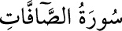

37- SÂFFÂT SÛRESİ
Adını, saf tutmuş meleklere işaret eden ilk âyetten alan ve kâinattaki güçlerden söz
eden bu sûre, Mekke’de inmiştir; 182 âyettir. İlk üç âyette, saf tutmuş meleklere,
bulutları sevk ve idare eden güce, zikri yapan dile yahut insana yemin edilerek
Allah’ın bir olduğu gerçeği ortaya konmuştur.